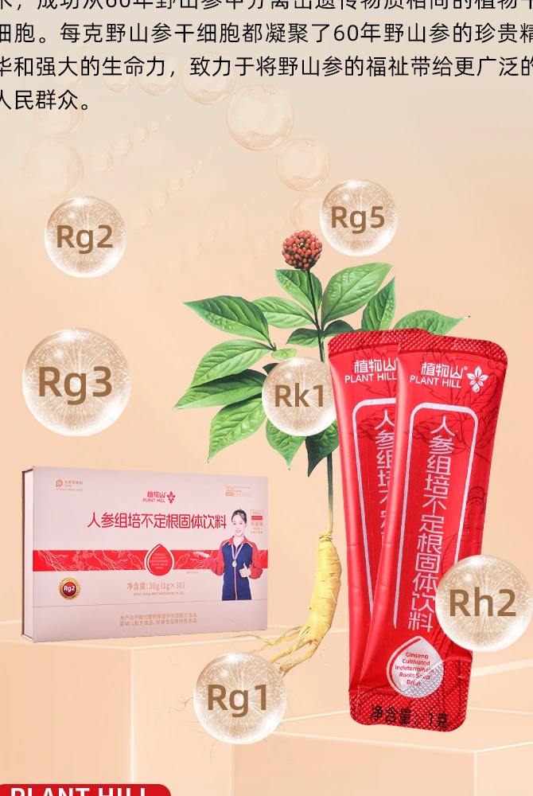

30G
REAL PACKAGE

01 / IDENTIFICATION
人参组培不定根固体饮料
PLANT CELL TECHNOLOGY / DOUBLE SPECIMEN
植物
配方
档案
把两款植物科技产品还原为可阅读的档案：包装、规格、原料、原图文案与检测报告，各自拥有清楚坐标。
- 02
- PRODUCTS
- 06
- INGREDIENT GROUPS
- 19
- POSTER SEGMENTS
- 07
- PDF REPORTS
REAL PACKAGERAW MATERIALSORIGINAL COPYLAB REPORTS
SCROLL TO INDEX
01 / MATERIAL INDEX
六组原料，
六个可核对的坐标。
以下影像均从鹿肾丸详情长图中截取，保留原始照片、中文名称与英文标识。

01 / 06
人参组培不定根 · 肉苁蓉